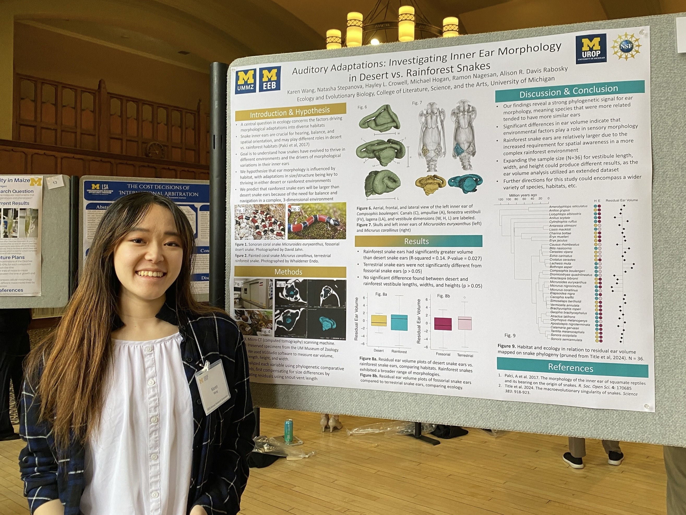

Welcome!!
GIS & Remote Sensing Cartography Environmental Research
I'm Karen Wang, a Master's student at the University of Michigan studying Geospatial Data Science and Ecosystem Science & Management. I'm passionate about using GIS, remote sensing, and data visualization to better understand environmental challenges.
About me
A little more about me
I'm a Master’s student at the University of Michigan School of Environment and Sustainability specializing in Geospatial Data Science and Ecosystem Sciences & Management. I’m interested in addressing environmental issues with data-driven solutions, combining GIS and remote sensing with clear, impactful data visualization and cartographic design, with particular interests in oceanography, flood mitigation, and water resources.
I enjoy working with spatial and environmental data to study climate change, flooding, natural hazards, and conservation. Most recently, through the NOAA National Ocean Service William M. Lapenta Internship, I analyzed extreme water levels using Python, time-series analysis, and statistical models to better understand changing coastal flood risk. Previously, through NASA DEVELOP, I integrated satellite, census, and ancillary data to create flood-risk and social-vulnerability models, helping identify priority areas for wetland conservation in South Carolina.
I also enjoy figure skating, drawing and painting, and birdwatching!
Research Interests
GIS, Remote Sensing, Climate Change, Coastal Oceanography, Disaster Response, Conservation Ecology
Technical Skills
Esri ArcGIS Pro, QGIS, Google Earth Engine, Microsoft Suite, Adobe Photoshop & Illustrator
Programming Languages
R, Python, C++, HTML/CSS, GitHub
